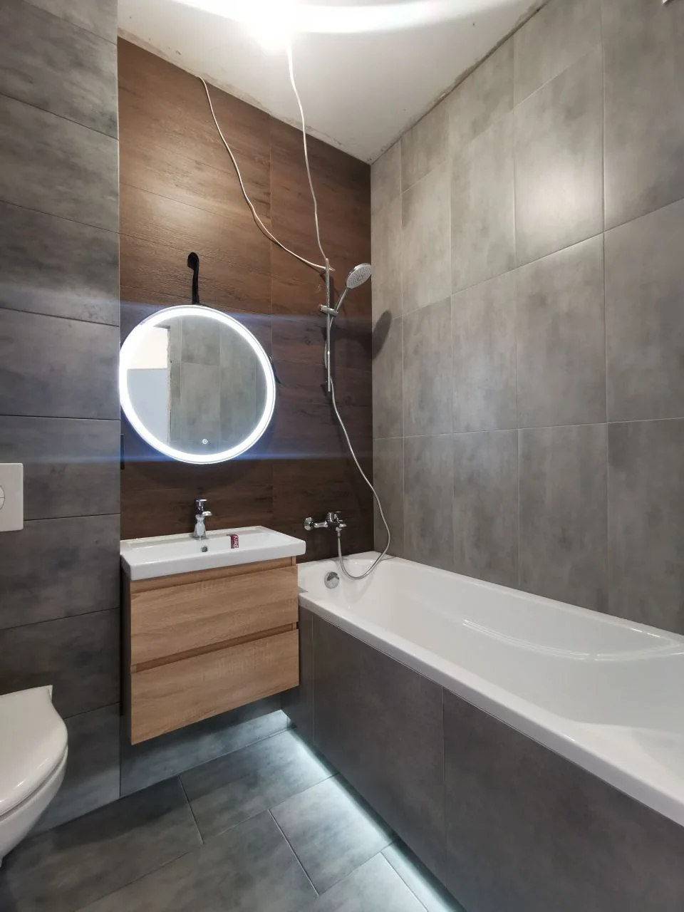
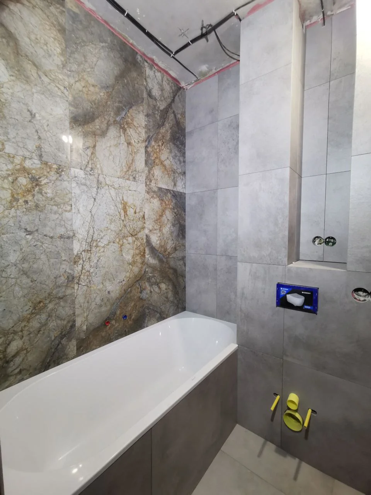
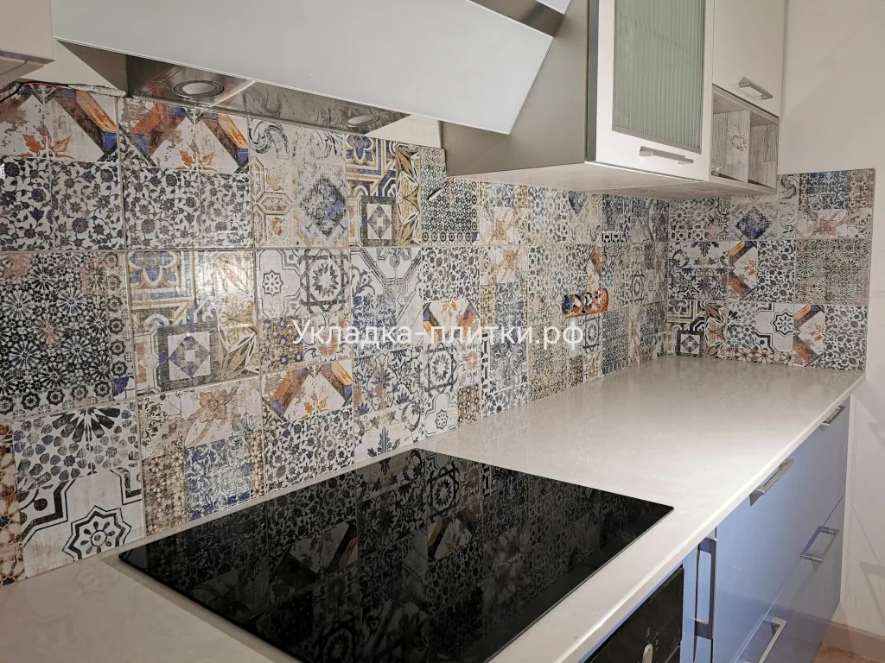
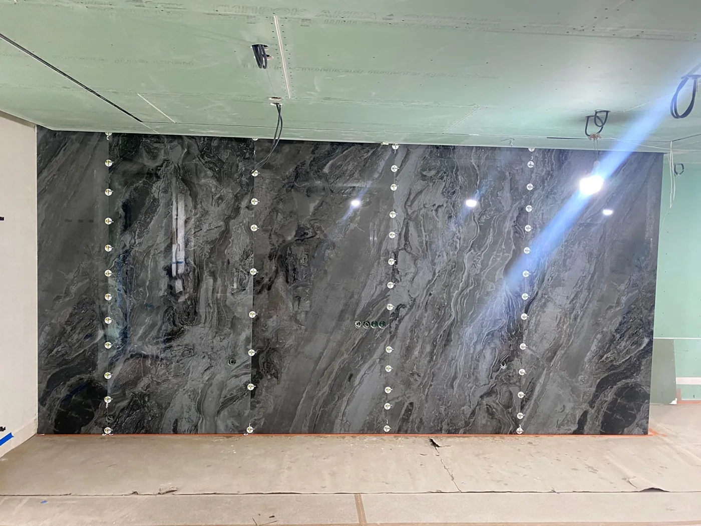
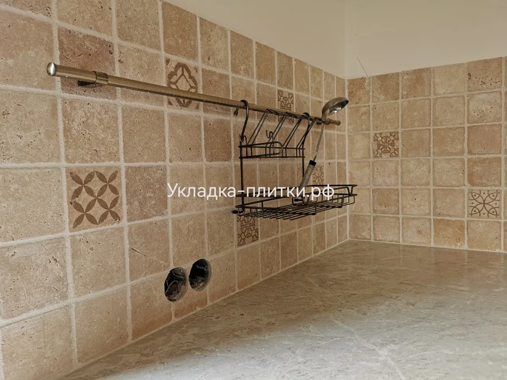
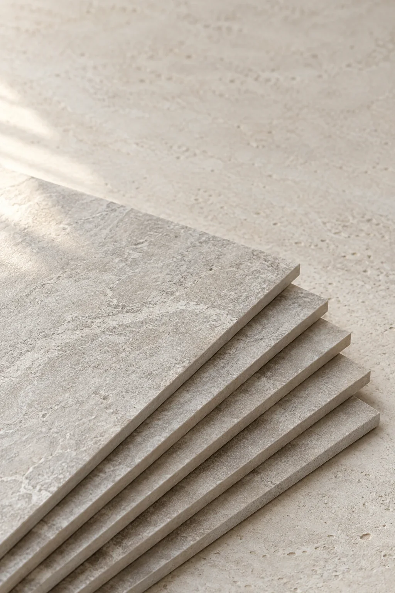
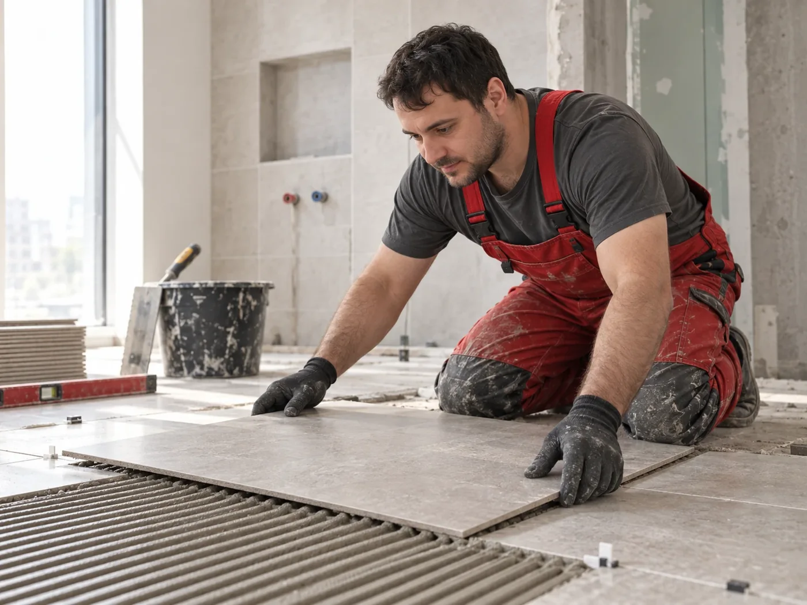

Ванные комнатыОт основания до последнего шва↗
ПРОДОЛЖЕНИЕ ГЛАВНОЙ · ВИЗУАЛЬНЫЙ ЭСКИЗ ДЛЯ 2K
01 / Наши работы
Сказки кончаются,
Сказки кончаются,
реальные работы остаются
Плитка, у которой есть история — и адрес.
Вместо идеальных рендеров показываем результат руками.



✤ ─── ✤Идея: крупное фото ведёт галерею, остальные работы раскрываются по кликуСмотреть, что я делаю →
Что я делаю
Каждый вид работы — отдельная арка мастерской. Снимки здесь настоящие, рамка — из мира Горыныча.

КерамогранитСтены, полы, крупный формат↗
Фартуки для кухниРисунок сходится до миллиметра↗

Санузлы и нишиУглы, откосы, скрытые детали↗
Красивая плитка начинается с ровного основания❦Укладка плитки в Санкт-Петербурге и области

45°
03 / Деталь, по которой видно мастераУгол под 45°.
Угол под 45°.
Красиво даже вблизи
Точный запил керамогранита позволяет соединить плитку без накладного пластикового уголка. Именно такие детали делают ванную цельной.
Донакладной профильПослечистый стык плитки
ДЕТАЛИ РЕШАЮТ ВСЁ
Соберите своё логово
Несколько шагов — и приблизительная стоимость работ появится сразу. Точная смета после замера.
♛Плиточная мастерскаяЭскиз помещения · вид сверху
Раскладка меняется при выборе плитки
Стены и полШов 2 ммПодрезка у края
1 Помещение2 Плитка3 Расчёт
Какую комнату укладываем?
×
Формат плиткиВыберите коллекцию позже — сейчас нужен размер
Ориентир по работам Демо-расчёт, без материалов—
После замера Гор проверит основание, раскладку и сложные узлы.
05 / ОтзывыРовные линии.
Ровные линии.
Спокойные люди.
Реальные слова клиентов будут рядом с фотографиями их работ. Так отзыв можно проверить по результату.

Гор работает лично★★★★★Ванная комната
«Всё сделали аккуратно: швы сошлись, углы ровные, после работы чисто. Помогли выбрать раскладку до начала ремонта».
★★★★★Кухонный фартук
«Плитка с рисунком легла так, как мы представляли. Видно, что к деталям относятся внимательно».
Для финальной версии: подставить подтверждённые отзывы и фотографии соответствующих объектов.